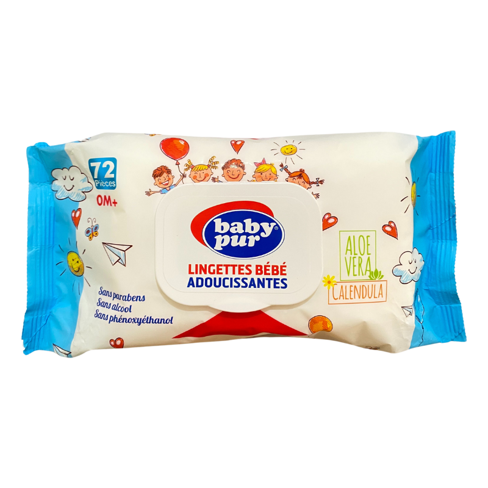

BABY PUR LINGETTES BEBE ADOUCISSANTES 0M+ 72 PIECES

Description du produit
Lingettes humides nettoyantes et apaisantes pour le change de bébé, enrichie à à la calendula, l'aloe vera et en substances adoucissantes, elles respectent et protègent la peau sensible de bébé.
Caractéristiques
- Douces à toucher
- Pratiques à transporter
- Adaptées aux soins quotidiens
Informations du produit
Catégorie : Nettoyage et hygiène
Prix : 6.640 DT
Conseils d'utilisation
Utiliser les lingettes selon les indications figurant sur l'emballage.
Quantité
Retourner au catalogue